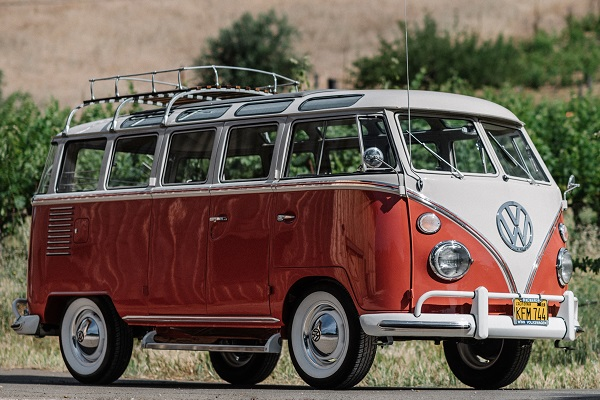

Volkswagen T2
El Volkswagen T2, también conocido como "Bay Window" o "Breadloaf", fue el sucesor del icónico Volkswagen T1. Introducido en 1967, el T2 continuó la tradición de Volkswagen de producir vehículos comerciales ligeros y versátiles. Con mejoras significativas en diseño y rendimiento, el T2 rápidamente se convirtió en un favorito entre los aficionados al camping y los aventureros.
A diferencia de su predecesor, el T2 presentaba un parabrisas delantero de una sola pieza, eliminando la división central que caracterizaba al T1. Este cambio no solo mejoró la visibilidad del conductor, sino que también le dio al T2 un aspecto más moderno y aerodinámico.
El T2 fue diseñado para ser más seguro y más cómodo que el T1. Volkswagen introdujo mejoras en la suspensión, los frenos y el sistema de dirección. Además, el T2 contaba con una mayor distancia entre ejes, lo que proporcionaba una conducción más estable y un mayor espacio interior.
El motor del T2 también se mejoró en comparación con el T1. Aunque inicialmente se ofrecía con motores de 1.6 litros, Volkswagen introdujo opciones de motor más potentes en años posteriores, incluyendo versiones de 1.7, 1.8 y 2.0 litros. Estos motores proporcionaban un mejor rendimiento y permitían al T2 manejar cargas más pesadas.
Una de las características más populares del T2 fue su configuración de furgoneta camper. En colaboración con Westfalia, una empresa alemana de conversión de vehículos, Volkswagen ofreció versiones camper del T2 que incluían una cama plegable, una cocina pequeña y espacio de almacenamiento adicional. Estas versiones camper se convirtieron en un icono entre los entusiastas del camping.
El T2 también fue utilizado en una amplia variedad de aplicaciones comerciales. Desde vehículos de reparto hasta ambulancias y vehículos de servicio, el T2 demostró ser increíblemente versátil y confiable. Su diseño modular permitía a los propietarios adaptar el vehículo a sus necesidades específicas.
A lo largo de su producción, el T2 se fabricó en varias plantas alrededor del mundo, incluyendo Alemania, Brasil y México. La producción en Alemania continuó hasta 1979, mientras que en Brasil, el T2 se produjo hasta 2013, lo que lo convierte en uno de los modelos de vehículos con mayor producción continua en la historia.
El T2 también dejó una huella significativa en la cultura popular. Al igual que el T1, el T2 se asoció estrechamente con el movimiento hippie de los años 60 y 70. Su diseño espacioso y su capacidad de personalización lo hicieron ideal para largos viajes por carretera y aventuras espontáneas.
A lo largo de los años, el T2 ha sido objeto de numerosas restauraciones y proyectos de personalización. Los entusiastas de los vehículos clásicos a menudo buscan T2 en buen estado para restaurarlos y devolverles su antigua gloria. Los T2 restaurados pueden alcanzar precios elevados en subastas y ventas privadas.
En términos de legado, el T2 ha inspirado a numerosas generaciones de diseñadores y fabricantes de automóviles. Su influencia se puede ver en la tendencia continua hacia vehículos más versátiles y personalizados. El espíritu del T2 vive en la pasión de los entusiastas que continúan cuidando y celebrando estos vehículos clásicos.
La comunidad de propietarios de T2 es activa y vibrante. Existen numerosos clubes y eventos dedicados a la celebración del T2, donde los propietarios pueden mostrar sus vehículos, intercambiar consejos de restauración y disfrutar de la camaradería que estos vehículos inspiran.
A pesar de los avances en la tecnología automotriz, el T2 sigue siendo un símbolo de simplicidad y funcionalidad. Conducir un T2 es una experiencia que conecta al conductor con una era pasada, recordando un tiempo más simple y una forma de vida más relajada.
En resumen, el Volkswagen T2 es más que un vehículo; es un símbolo de libertad y aventura. Su legado continúa inspirando a nuevas generaciones de entusiastas y aventureros, asegurando que el espíritu del T2 viva para siempre.